THC
What is THC?
THC (delta-9-tetrahydrocannabinol), is the chemical responsible for most of marijuana's psychological effects. It acts much like the cannabinoid chemicals made naturally by the body, according to the National Institute on Drug Abuse (NIDA). THC binds with the cannabinoid 1 (CB1) receptors in the brain.
Effects on the body
Cannabinoid receptors are concentrated in certain areas of the brain associated with thinking, memory, pleasure, coordination and time perception. THC attaches to these receptors and activates them, affecting a person's memory, pleasure, movements, thinking, concentration, coordination, and sensory perception. It also interferes with how information is processed in the hippocampus, which is part of the brain responsible for forming new memories. THC can induce hallucinations, change thinking and cause delusions. On average, the effects last about two hours, and kick in 10 to 30 minutes after ingestion. Psychomotor impairment may continue after the perceived high has stopped, however.
Concentrations of THC in cannabis
When THC is exposed to air, it degrades into cannabinol, a cannabinoid that has its own psychological effects. THC concentration also depends on the cultivation of the marijuana plant, known scientifically as Cannabis sativa L.
CBD
What is CBD?
CBD, short for cannabidiol, is a chemical compound from the Cannabid sativa plant. It's a naturally occurring substance that's used in products like oils and edibles to impart a feeling of relaxation and calm. Unlike its cousin THC, which is the major active ingredient in marijuana, CBD is not psychoactive.
Effects on the body
CBD can have several positive effects. Some of these research-backed uses of CBD even suggest it may help you feel relaxed. That can feel a bit like a high, though it’s not intoxicating. Research suggests CBD is beneficial for relieving symptoms of anxiety and depression. It might also ease inflammation and pain. Some people with a history of epilepsy may find relief from seizures when using CBD. The Food and Drug Administration approved the first CBD-based drug, Epidiolex, for treating epileptic seizures in 2018.What’s more, CBD has also shown promise as a way for doctors to help people with schizophrenia avoid side effects of antipsychotic medication.
Concentrations of CBD in cannabis
CBD oil may contain small amounts of THC because it’s present at low levels in the hemp plant. CBD can have no more than 0.3 percent THC to be legal at the federal level.